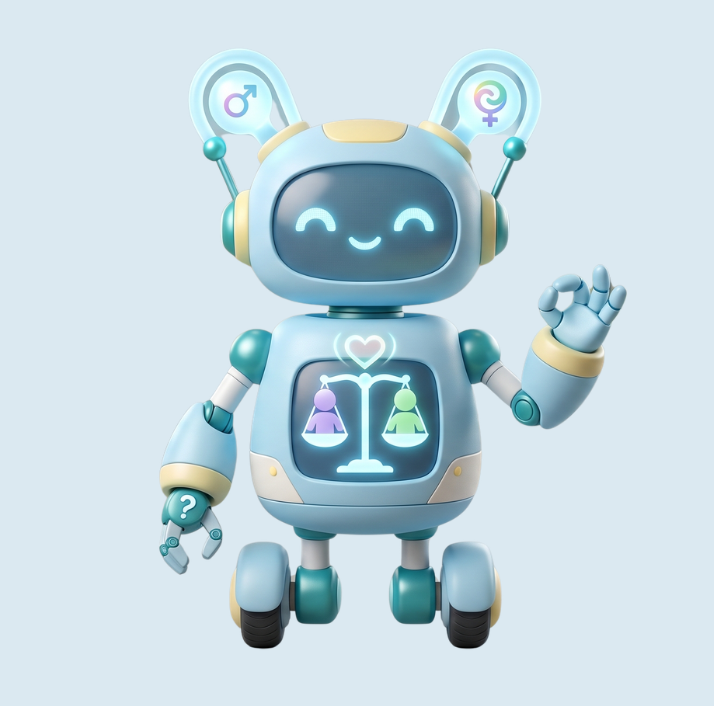

流於表面的惡意已逐漸減少，但根深蒂固的「隱性偏見」與「微歧視」仍潛伏在校園與職場的日常對話中。讓我們一起卸下防備，主動察覺盲點。
這是一個專為面對權力不對等、不敢走正式申訴管道的受害者，所量身打造的匿名傾訴安全同溫層。在這裡，你可以完全去識別化地寫下你在校園或職場遭遇的無形微歧視，抒發委屈，凝聚翻轉偏見的改變力量。
透過 3 分鐘輕量化數位互動，在對話解謎與天秤動態傾斜中，主動反思生活常理下的既定成見，讓平權教育深植人心。
整合台灣核心「性平三法」法規，提供自我防衛 3 步驟圖卡引導。並提供一鍵直撥諮詢專線，成為校園與職場心理安全感的守護前哨。